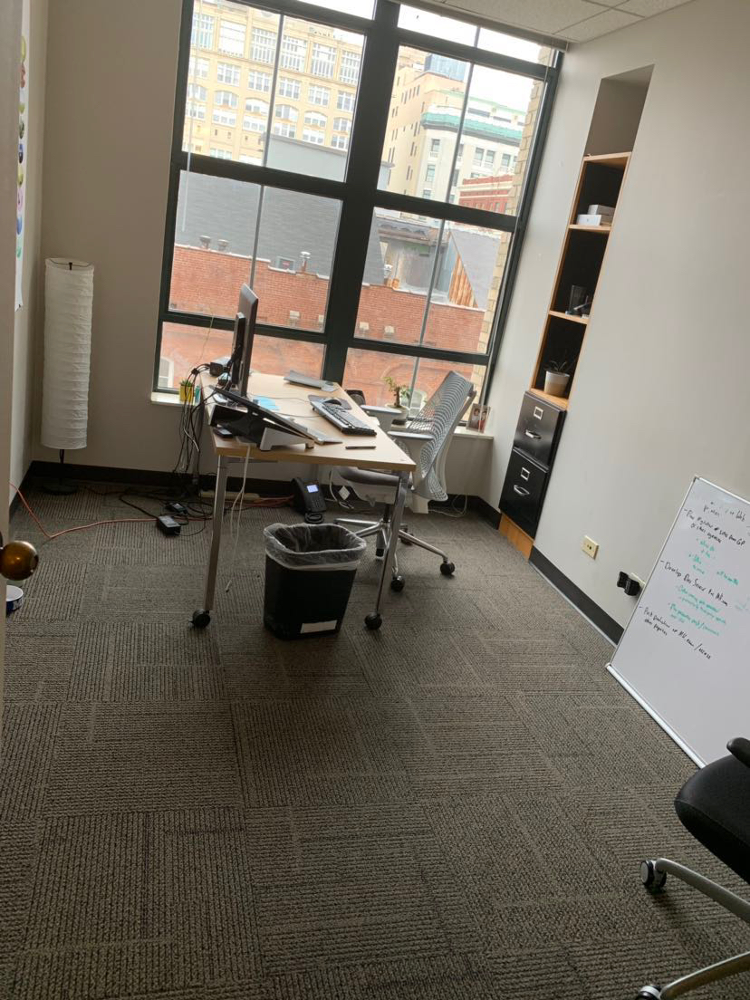
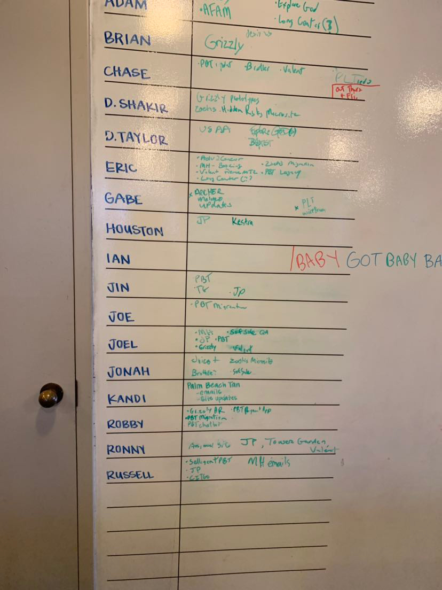

My first reaction when I walked into Archer Malmo was that I was impressed by how the "living room" was set up. Since they had a ping pong table, and a rack where the workers can hang up their bikes. Then seeing how the workers seem super chill plus the outfits they were wore them look like the average person unlike someone who's wearing a suit and tie, but it would looked nice.Then getting to see some of the workers bring their dog to work made the place seem really chill. My first impresson of the place was a good vibe, and that made me feel like I could see a job into this place if I decide to take this class futher into the future.
Never in my life have I ever thought I would've see myself in this field or doing any type of work that requires me to type any HTML or CSS. Yet last year I found computer science really fun and something i could do so that is why I'm taking Web Design and moving on to the third class in my senior year. Since my main major is biology and my minor could be computer science. Then I am thinking about taking coding 1 in my senior year since I do want to do coding so might as well take that class.
The questions have left that I forgot to ask was that if being a biology major and doing computer science was a good idea? Since those two things are totally different from another one but they could relate to one another.Yet as i thought about the questions, some of them were like could this major and minor work because they are totally different from one another. I did hear the person that they did have people that are history majors and they end up working for them.
We had lunch at a place called cookout, after the tour ended. It was fun hanging out with my friends from both classes which were 5th and 6th period.The jokes that were said were really funny and made my day, because i did make a new friend from the 5th period class.

This trip has really grabbed my attention mainly thinkning if i should keep doing web design or if i should go into programming and learning new stuff. Since this stuff can have an impact on what minor I do in college and what type of job i will have with my biology major.I do enjoy what we do in this class and do wish to keep doing this stuff. I will try to focus on this class more and will make this my minor. I do still have some more growing to do with this skill and will try to keep learning more and more shortcuts in this class.